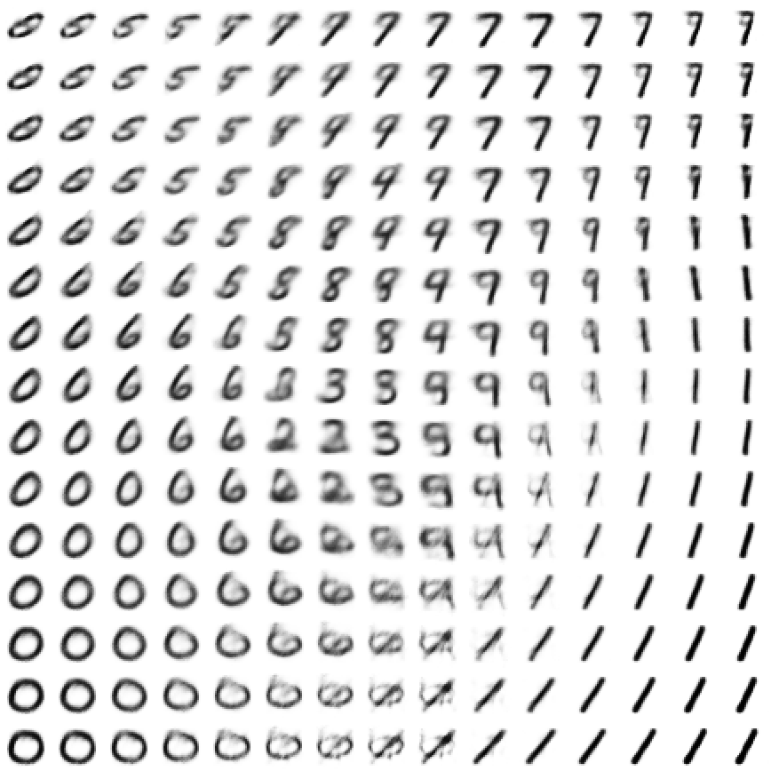
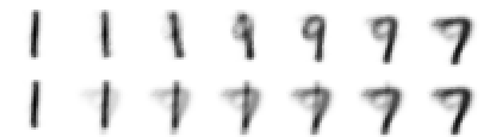
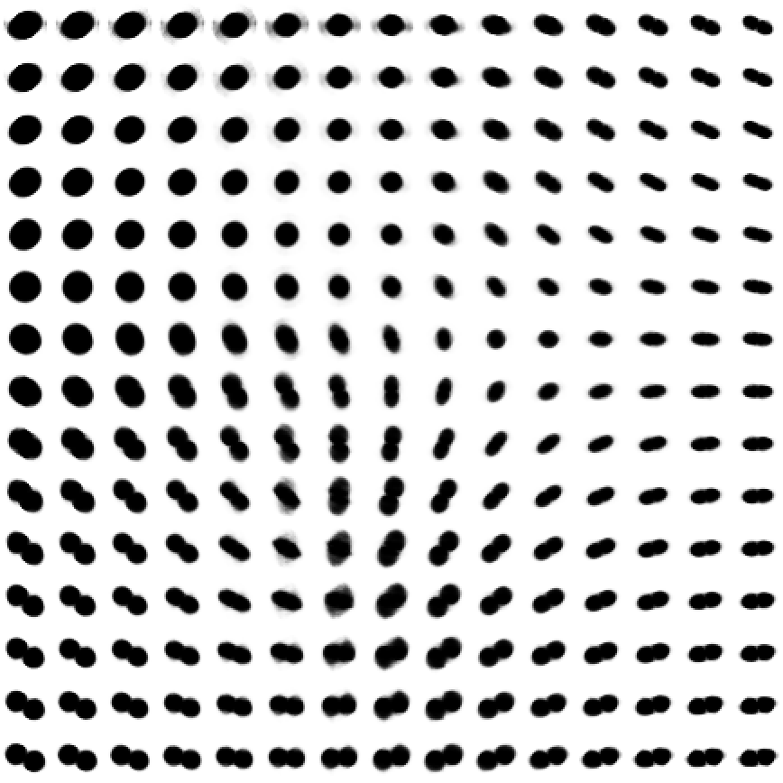
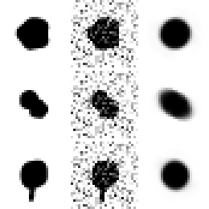
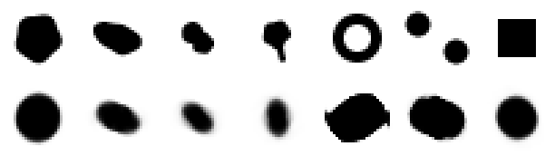

A trained VAE gives us a decoder from a small latent space to images, and an encoder back. Today we use it.
Generate: draw z from the prior, decode.
Interpolate: walk in z from one image to another; the midpoint is not the pixel average.
Explore: what the latent space has learned about digits and about cell shapes.
Apply: denoising, anomaly detection, morphology spaces. And the limits: blurry images, nonsense far from the data.
Slides titled The math give the formulas and proofs; the ideas are complete without them.
Generating: decode a draw from the prior

Decoding a 15 \times 15 grid of points z \in [-3, 3]^2: almost every point gives a digit-like image, and neighbours are similar. Only the bottom middle, where no training digit lies, decodes to smudges. To make a new image: draw z \sim \mathcal N(0, I) and decode.
Walking through latent space

Top: decode 7 equally spaced points on the line from the centre of the 1s to the centre of the 7s, z(t) = (1 - t)\,z_A + t\,z_B. Bottom: fade the two end images into each other, pixel by pixel, (1 - t)\,x_A + t\,x_B.
The latent walk passes through plausible shapes (here via a 9-like stroke).
The pixel fade is a double exposure: a faint 1 and a faint 7 on top of each other.
Midpoint vs average, by hand
A decoder that draws a bright bar on a 3-pixel image at position z: pixel i gets \max(0,\ 1 - |z - i|), i = 0, 1, 2.
z = 0
z = 1
z = 2
decoded
(1, 0, 0)
(0, 1, 0)
(0, 0, 1)
Latent midpoint of z = 0 and z = 2: z = 1, the bar in the middle, (0, 1, 0).
Pixel average of the two images: (0.5,\ 0,\ 0.5), two half-bright bars.
A linear decoder (PCA) would give the average; a curved decoder moves the bar.
What the latent space has learned
Similar images are neighbours: in the digit VAE, 4 next to 9, and 3, 5, 8 together in the middle.
Two numbers are too few to keep ten digits apart: a vote among the 15 nearest test digits in z finds the right digit for 68% of test images.
The axes mean nothing by themselves: the KL penalty looks the same if the latent space is rotated, so “z_1” is not “thickness”. Read directions from decoded images, not from the axis labels.
Distances are only roughly meaningful, as in any nonlinear map.
Try it: digits
Cell shapes: a morphology latent space

The same network trained on synthetic cell masks (28 \times 28): round, elongated, dividing, with a protrusion, at random sizes and orientations.
The map organises size (large round cells on the left), elongation and orientation (right) and dividing cells (bottom).
A walk in z is a smooth change of shape; a generated mask is a plausible new cell.
Thin protrusions are lost: two numbers cannot also hold their direction. Their reconstruction error is the highest of the four kinds.
A nonlinear relative of the point distribution model (PCA of landmark shapes), learned straight from pixels.
Denoising

Columns: clean mask, with noise added (sd 0.3 per pixel), decoded from the code of the noisy mask.
The decoder can only draw cell-like images, so it cannot draw the noise.
Mean squared error against the clean mask: noisy input 0.045, 0.048, 0.047; decoded 0.009, 0.018, 0.016.
But it draws its own version of a cell: details the model never learned (a protrusion, a precise outline) are replaced by typical ones.
Denoising by “project onto what the model can draw”: the nonlinear cousin of keeping a few PCA components.
Anomaly detection

Top: input masks. Bottom: their reconstructions. Four normal test cells, then a ring, two cells and a square.
Normal cells (the 12 test examples of the demo): error 0.004–0.023. On 2000 test masks, 99% have error below 0.045.
Ring 0.172, two cells 0.253: far above, flagged as unusual. Their codes land far outside the prior’s circle.
Square 0.030: below the threshold. It is close enough to a round cell to be rebuilt as one. The detector only sees what the model cannot draw.
Try it: cell shapes
β-VAE: tidier space, blurrier images
Weight the KL more, \beta > 1:
Clouds are pulled harder to the prior: more overlap, a smoother latent space, and often directions that match one factor each (size, elongation, …): “disentangled”.
The decoder must serve wider clouds with one image each: blurrier, more average images.
\beta < 1: sharper reconstructions, but the gaps of a plain autoencoder start to return.
There is no free lunch: \beta trades image quality for latent-space quality.
Limits
Blurry outputs: the decoder outputs the average of all images that fit a given z (next slide). Fine detail and sharp edges are smeared.
Far from the data the decoder guesses: it always outputs an image, plausible or not. Generated images are only as good as the training images.
Small latent spaces lose detail (protrusions); large ones are hard to look at.
Sharper generators: GANs (a generator trained against a classifier that tries to tell real from fake) and diffusion models (learn to remove noise step by step, then start from pure noise). Both build on the same idea: a learned map from random numbers to images.
The math: why VAE images are blurry
Suppose several different images x are all encoded near the same z. The decoder outputs one image c for that z, chosen to minimise the expected squared error: